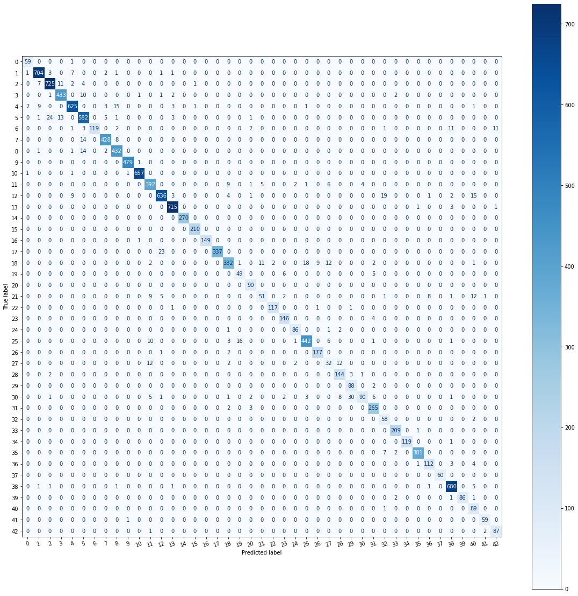

Traffic Sign Recognition Using Deep Networks and Pytorch
Introduction
Traffic Sign Recognition is a challenging task in ADAS. It has various applications and gives accurate safety precautions and guiding information on highways and urban areas. Although many algorithms have proved to be effective in executing this task, as demonstrated by German Traffic Sign Recognition Benchmark (GTRSB). There are still some issues such as brightness, hue, contrast, saturation, translation, rotation etc which make achieving accurate recognition accuracy difficult. We have used PyTorch over other frameworks as it provides dynamic computation graphs which can be used to visualize weights and effect of these filters on the images easily. The framework also allows users to easily write own layer types and run on GPU. However, this has its own drawbacks such as there is no easy way to understand the documentation and users have to write their own training code.
The feature-based method may be implemented in two stages using computer vision techniques: (1) employ traditional techniques to extract valuable characteristics; (2) uses extracted features to categorize traffic signs. [1] For traffic sign identification, Zhang et al. employs a binary tree of support vector machine features in local binary pattern. Other method is to extract Histograms of Oriented Gradient(HOG) features from traffic sign pictures and recognize and classify them using a linear cascade of SVM.
Deep hierarchical neural network has attracted a lot of attention since the emergence of deep learning techniques for traffic sign identification. Several deep learning models are built and presented at the International Joint Conference Neural Network(IJCNN) and IEEE Computational Intelligence Society (CIS) held for German Traffic Sign Recognition Benchmark (GTSTB). [2] network achieves 99.46 percent recognition accuracy. In contrast to 95.68 percent accuracy is achieved from feature based method. Although the deep CNN solution surpasses the feature-based strategy for traffic sign identification, it has a couple of limitations: (1) A deep learning model is often constructed through an iterative trail and error process, which necessitates a large amount of labeled data during the training phase.(2) a large number of neuron connections would incur significant computational costs.
The success of most deep learning models is determined by the quality, amount and relevance of training data. However, one of the most prevalent problems in applying deep learning in the organization is lack of data. This is due to the fact that gathering such data may be costly and time-consuming in many circumstances. So, we used data augmentation which is a set of approaches for artificially increasing data volume by producing additional data points from existing data. Making minor adjustments to data or utilizing deep learning models to additional data points.
Related Work
We focus on exploring different architectures, using transfer learning and data augmentation.
Architecture
Alexnet has won the ImageNet large-scale recognition challenge in 2012. This is the first architecture that has brought a significant change in CNN architecture in computer vision. The AlexNet has 5 convolutional layers, 3 max pooling layers, 1 dropout later and the activation function used is ReLu.
Data Augmentation
Models trained on short datasets do not generalize well to data from the validation and test sets, which is an issue. As a result, over-fitting is an issue with these models. A number of strategies have been offered to reduce overfitting. Adding a regularization term to the weights' norm could be the easiest solution. Dropout is another well-liked strategy. During training, dropout works by probabilistically removing a neuron from designated layers or by dropping certain connections . Batch normalization, which normalizes layers while also allowing us to learn the normalization weights, is another common approach. Batch normalization may be used to every layer in a network, making it particularly successful, even in generative adversarial networks like CycleGAN .
Transfer Learning
This paper [2] uses transfer learning based model to repetitively train by fine tuning parameters at a different learning rate. The results show that the transfer learning model can achieve high level recognition performance in traffic sign recognition which is up to 99.18\%. The model used is Inception-V3 on Belgium Traffic Sign Database. We have implemented a similar study which is based on ResNet-18 on GTSRB dataset.

Fig. 1 Input images and classes
Methods
Approach
The aim of our project is to work through various techniques involved in computer vision like building network architecture, transfer learning, Data Augmentation.
The principle involved in building a network architecture for image/video based data set involves applying convolutional layer to the input,periodically down sampling the spatial dimensions while increasing the number of feature maps.
Here we are working on a data set called GTSRB (German Traffic Sign Recognition Benchmark). It consists of following,
- Size of Training set: 31367 images
- Size of Validation set: 7842 images
- Size of test set: 12630 images
- Shape of traffic sign image: (32, 32, 3)
- Number of unique classes/labels: 43
Overall, the quality of the images is good. However, there are a few things that need to be adjusted before preprocessing. For instance, most of the images are dark and have low contrast, making them difficult to recognize. There are instances of deformations and occlusions. In real life, sometimes signs are damaged, vandalized or only partially visible. This model should be able to recognize the signs even in such circumstances, so augmenting the dataset with a variety of distortions is important. Most of the images are taken from a straightforward line and angle, which is good for the dataset, but in real life situations the model should be able to recognize signs from different angles.
Network Architecture
In this project multiple Convolutional Neural Network is used to train and classify the signs.A basic convolutional neural network(input layer, two hidden layers, output layer), AlexNet based convolutional neural network , Transfer learning on Resnet based network was explored. We explored the Alexnet based architecture quite a lot and is discussed in this section. The architecture of our model is initialized by the sequential model. The first layer is defined by, CONV - RELU - POOL. This layer uses a 3*3 kernel which helps to learn larger features, and will especially help to distinguish between traffic sign shapes and color blobs on the sign themselves. This is followed by another two sets of (CONV - RELU - CONV - RELU ) * 4 - POOL layers. These help to deepen the layer by stacking two sets of CONV - RELU - BN layers before adding max-pooling to reduce volume. The final layer of the model consists of two sets of fully connected layers and a softmax classifier. Dropout is applied in order to prevent over-fitting. The model is compiled with Adam optimizer which performs well, and loss is “categorical crossentropy” because we have multiple classes to categorise. Other optimizers like RMSprop and SGD(Gradient descent with optimizer) were tested but did not cause any improvement in performance of the model, so Adam optimizer was finalized as it is the most commonly used one.
Data Augmentation
Data Augmentation is done so that model has more number of images to learn[4]. Transformation is done on the images, such as rotation, shifting and Horizontal Flip. We have explored the effect of data augmentation to improve the performance and outcomes of the above described architectures by forming new and different examples to train data sets. The transforms applied on the data set are resizing, brightness, contrast, saturation, hue, rotation, horizontal, vertical flip, shear, translate, center crop and gray scale. The accuracy of the model improved after applying data augmentation. The extent of these manipulations was applied after study of the training images. Similarly brightness was modified in both directions to correct for darkness that distorted some images and to create additional data of similar images. Test time augmentation involved the same manipulations applied on the training data. The final model is 10 times bigger than the original data set size through data augmentation.
Transfer Learning
Studies indicate that the classification of a new image can be well implemented by transfer learning. We have changed the architecture of fully connected layers and reserving the convolutional stack from ResNet 18 pretrained on ImageNet data set. The number of outputs are modified to the number of classes GTSRB dataset contains which is 43 classes. The model is trained by freezing the weights of convolutional stack and only training fully connected layers. We spent most of the time optimizing hyper parameters and tuning image augmentation. Since the initial convolutional stack is trained on the ImageNet which consists of cats, dogs etc which are very different from traffic signs, the lower layers are not as useful. However the last layers are trained to perform very specific tasks and we want to train them and retain them on our task.
Experiments and Results
A variety of models, including 12 different architecture combinations were attempted to reach this stage. Initially, a simple CNN consisting of an input layer, a convolutional layer, a Fully connected layer and a softmax layer was tested, and this receives approximately 81 percent accuracy on the validation set.
Various Architectures such as DenseNet were explored, but it was very complex to implement as it required a lot of nested functions to create various blocks of convolutional layers. The process of initializing all the variables and getting all the data to flow through these blocks was a challenge so it had to be abandoned.
The next approach was to add more layers to the model. As the network became deeper, it improved the accuracy of the model. Convolutional layer of about 32 kernels and 3*3 filters was added to the model which would help in learning more features from the images. This was evident in the results, as it improved the accuracy of the model by around 92 percent. A lot of trial and error was involved throughout the process. The further addition of layers did not cause any change in the accuracy of the model.
Fig. 2 Training loss and Accuracy
Batch Normalization was applied to the layers which helped the model to be faster. The next approach was pre-processing the data. As the number of images across classes were not uniform , it is very important to augment the data. First iteration of the Data Augmentation improved the accuracy by 1 percent.
Fig. 3 Confusion Matrix of AlexNet based network architecture.
The above confusion matrix proves that the model does a good job in making accurate predictions. However, we have few wrong predictions. On analysing the data, we found that the wrong predictions are not a lot different and the sign boards are of same shape, have a similar pattern in them. To overcome this issue, we can train the model on those similar looking sign boards so that the model can generalize on unseen data more accurately.
ReLU is used as the activation function for all the CNN layers as it can learn complex features . ReLU is one of the most commonly used activation function as it can make the model learn quickly and over real-time. Also, Dropout is added to the CNN to avoid over-fitting. Dropout also increases the randomness of the network.
Transfer Learning
When the model is trained only on the last fully connected layers and not the entire convolutional stack we observed that the model's performance is depreciated and needed to be trained on the whole convolutional stack to get required results in case of ResNet-18. However we have found that GoogLeNet performs well in transfer learning classifies the signs with better accuracy.
Data Augmentation
The entire training set is divided into two parts , 80 percent for training and 20 percent for Validation , which is approximately 31367 images for training and 7842 images for validation. These images are then augmented before training. On training the model, the accuracy of training increases gradually and the loss decreases gradually with increase in training times. The graph of accuracy and training time is shown below.

Fig. 4 Input images and classes
Discussion and Summary
There is a lot of scope in improving the classification and to generalize our results. We have explored several architectures and fine tuned each of these architectures to improve accuracy. We were able to improve accuracy from 81 percent from using a basic convolutional stack up to 95 percent using AlexNet architecture. Since the AlexNet is much deeper than the basic convolution stack, the model is able to learn more features and generalize data with improved accuracy. However, the accuracy of this model was limited to 95 percent and did not show any improved accuracy even after adding additional layers and the model starts to memorize the training data and will degrade performance on unseen data. This is usually referred to over fitting and does not generalize well.
We found out that not all transfer learning models work perfectly on every data. We need to understand what data is the model we are trying to use is trained on, on what data are we testing it and the architecture used in the model. A further study can be done on this to choose the best architecture for transfer learning to generalize on the unseen data by just training on the last fully connected layers.
References
-
Daugman. J. G. (1985) Uncertainty Relation for Resolution in Space, Spatial Frequency, and Orientation Optimized by Two-dimensional Visual Cortical Filters. Journal of the Optical Society of America, 2(7), pp. 1160-1169.
-
Transfer Learning Based Traffic Sign Recognition Using Inception-v3 Model Chunmian Lin1, Lin Li1*, Wenting Luo1, Kelvin C. P. Wang2, Jiangang Guo, June 2018
-
Chilamkurthy, S. (2017, January 05). Keras Tutorial - Traffic Sign Recognition. Retrieved October 25, 2018, from [https://chsasank.github.io/keras-tutorial.html]
-
The power of Spatial Transformer Networks. (n.d.). Retrieved October 23, 2018 from [https://kevinzakka.github.io/2017/01/18/stn-part2/]
-
SPATIAL TRANSFORMER NETWORKS TUTORIAL
-
TRANSFER LEARNING FOR COMPUTER VISION TUTORIAL